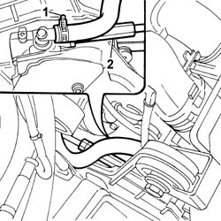
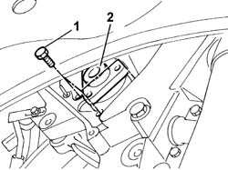
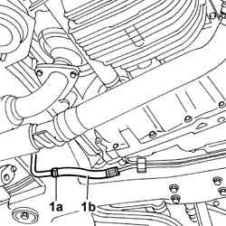
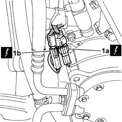
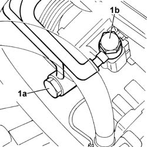
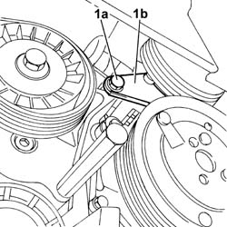
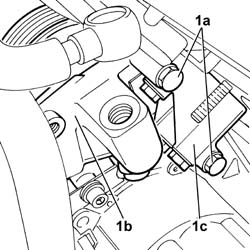
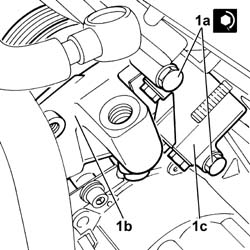
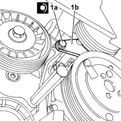
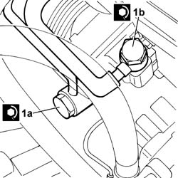

4130B21 POWER ASSISTED STEERING PUMP - R.R. with interfering belt(s) removed - Includes bleeding air
- Path
- Procedures > 41 STEERING > 4130 POWER ASSISTED STEERING > 4130B POWER STEERING HYDRAULIC SYSTEM > 4130B21 POWER ASSISTED STEERING PUMP - R.R. with interfering belt(s) removed - Includes bleeding air
- Kind
- repair procedure (removal / refitting; the operation number is the code)
- Applies to
- all engines; all production periods
- Interactive page
- https://sloeber94.github.io/elrnDB-lThss/en/#/173199
Applies to: engines: 2.0 TB, 2.4 20V, 2.4 JTD 10V, 2.4 JTD 20V; all production periods
 Removing
Removing
 Refitting
Refitting1. Disconnect the retaining band for the fluid supply pipe from the reservoir on the power assisted steering pump.
2. Undo the connector on the power assisted steering pump supplying pressurized fluid to the power assisted steering box.

Applies to: engines: 2.0 TB, 2.4 20V, 2.4 JTD 10V, 2.4 JTD 20V; all production periods
1. Undo the bolts fixing the pump to the support.
2. Remove the power assisted steering pump.

Applies to: engines: 2.0 TB, 2.4 20V, 2.4 JTD 10V, 2.4 JTD 20V; all production periods
Refitting
Removing- Fit the power assisted steering pump in the housing on the support.
- Tighten the bolts fixing thepower assisted steering pump to the support to torque.
 | Value - daNm | Fastening | Component | Ø |
|---|---|---|---|---|
. | 2.5 | Bolt | POWER STEERING PUMP | M8 |
- Connect the retaining band for the fluid supply pipe from the reservoir on the power assisted steering pump.
- Connect the connector on the power assisted steering pump supplying pressurized fluid to the power assisted steering box.
Applies to: engines: 3.0 V6, 3.2 V6; all production periods
Removing
Refitting- Position the vehicle on a lift.
- Make sure that the ignition key is in the OFF position, then disconnect the negative battery lead.
See in Op. 1048A28 vacuum air circuit resonator pipe - r+r
See in Op. 1048A21 AIR INLET HOSE FROM INTAKE TO FILTER - R.R.
See in Op. 1048A23 Cold AIR INTAKE for air filter - R.R.
See in Op. 1048A11 COMPLETE AIR FILTER -R.R.
See in Op. 7055B54 PROTECTION/GUARD under engine - R.R.
See in Op. 1088E10 Radiator cooling FAN - R.R.
See in Op. 1080B38 LEFT CATALYTIC PRECONVERTER - R.R. or Replace Gasket
- Position a suitable container for collecting the power assisted steering fluid
1. Open the retaining band (1a) and disconnect the flexible return pipe (1b) to the power assisted steering fluid reservoir from the duplex pipes, then leave the system to drain.

Applies to: engines: 3.0 V6, 3.2 V6; all production periods
1. Disconnect the connections for the engine oil level sensor (1a) and the air conditioning compressor supply (1b).
 | Description | Connector |
|---|---|---|
1a | Engine oil level sensor | K032 |
| Description | Connector |
|---|---|---|
1b | Air conditioning compressor engagement electro-magnet | L020 |

Applies to: engines: 3.0 V6, 3.2 V6; all production periods
1. Undo the connectors on the power assisted steering pump for the fluid return (1a) and supply (1b) pipes, keeping the copper washers underneath.

Applies to: engines: 3.0 V6, 3.2 V6; all production periods
1. Working on the wheel arch side, undo the bolt (1a) fixing the power assisted steering pump reinforcement bracket (1b).

Applies to: engines: 3.0 V6, 3.2 V6; all production periods
1. Working in the engine compartment, undo the two bolts (1a) fixing the pump (1b) to the mounting (1c) and remove the pump.

Applies to: engines: 3.0 V6, 3.2 V6; all production periods
Refitting
Removing1. Working in the engine compartment, position the pump (1b) and secure it to the mounting (1c) tightening the two fixing bolts (1a) to the recommended torque.
| Value - daNm | Fastening | Component | Ø |
|---|---|---|---|---|
1a | 2.2 | Bolt | POWER STEERING PUMP SUPPORT/BRACKET | M8 |

Applies to: engines: 3.0 V6, 3.2 V6; all production periods
1. Working on the wheel arch side, tighten the bolt (1a) fixing the power assisted steering pump reinforcement bracket (1b to the recommended torque.
| Value - daNm | Fastening | Component | Ø |
|---|---|---|---|---|
1a | 2.2 | Bolt | POWER STEERING PUMP SUPPORT/BRACKET | M8 |

Applies to: engines: 3.0 V6, 3.2 V6; all production periods
1. Connect the connectors for the pump return (1a) and supply (1b) pipes, positioning the copper washers, then tighten them to the recommended torque.
| Value - daNm | Fastening | Component | Ø |
|---|---|---|---|---|
1a | 4 | Connector | POWER STEERING PUMP SUPPLY PIPE | M18 X 1.5 |
| Value - daNm | Fastening | Component | Ø |
|---|---|---|---|---|
1b | 4 | Connector | POWER ASSISTED STEERING PUMP/BOX PIPE | M16 X 1.5 |

Applies to: engines: 3.0 V6, 3.2 V6; all production periods
1. Connect the connections for the engine oil level sensor (1a) and the air conditioning compressor supply (1b).
| Description | Connector |
|---|---|---|
1a | Engine oil level sensor | K032 |
| Description | Connector |
|---|---|---|
1b | Air conditioning compressor engagement electro-magnet | L020 |
Applies to: engines: 3.0 V6, 3.2 V6; all production periods
- Connect the duplex pipe to the fluid return pipe ato the power assisted steering reservoir and close the retaining band.
See in Op. 1080B38 LEFT CATALYTIC PRECONVERTER - R.R. or Replace Gasket
See in Op. 1088E10 Radiator cooling FAN - R.R.
See in Op. 7055B54 PROTECTION/GUARD under engine - R.R.
See in Op. 1048A11 COMPLETE AIR FILTER -R.R.
See in Op. 1048A23 Cold AIR INTAKE for air filter - R.R.
See in Op. 1048A21 AIR INLET HOSE FROM INTAKE TO FILTER - R.R.
See in Op. 1048A28 vacuum air circuit resonator pipe - r+r
- [0010T70]
- Connect the negative battery terminal and position the cover on the left hand side of the luggage compartment.
- Remove the vehicle from the lift.
Topics linked from this page (7)
- 1048A11 COMPLETE AIR FILTER -R.R.
- 1048A21 AIR INLET HOSE FROM INTAKE TO FILTER - R.R.
- 1048A23 Cold AIR INTAKE for air filter - R.R.
- 1048A28 vacuum air circuit resonator pipe - r+r
- 1080B38 LEFT CATALYTIC PRECONVERTER - R.R. or Replace Gasket
- 1088E10 Radiator cooling FAN - R.R.
- 7055B54 PROTECTION/GUARD under engine - R.R.